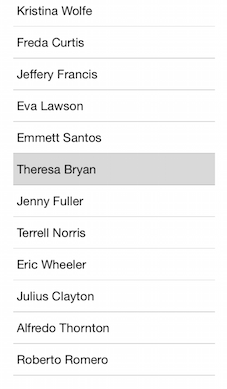

ListView: Selection
TKListView supports different selection modes:
- Single selection
- Multiple selection
The end-user can use different gestures to trigger cell selection:
- Selection on press.
- Selection on hold (long press).
Additionaly, TKListView provides a few methods to programmatically control the selection state as well as delegate methods to react to user interactions related to selection.
This article describes the selection API of TKListView in detail.
The allowsMultipleSelection property of TKListView defines whether the user is allowed to select multiple items at the same time. It also affects the default appearance of the selected items.
Single seletion mode

The default value of the allowsMultipleSelection property is NO (false)
Objective-C
_listView.allowsMultipleSelection = NO;
Swift
listView.allowsMultipleSelection = false
Multiple selection mode

Set the allowsMultipleSelection property to YES (true) to enable this view:
Objective-C
_listView.allowsMultipleSelection = YES;
Swift
listView.allowsMultipleSelection = true
Selection on press
By default TKListView will allow user to select on press.
Objective-C
_listView.selectionBehavior = TKListViewSelectionBehaviorPress;
Swift
listView.selectionBehavior = TKListViewSelectionBehavior.Press
Selection on hold (long press)
In this mode a long-press gesture is required in order to select a cell.
Objective-C
_listView.selectionBehavior = TKListViewSelectionBehaviorLongPress;
Swift
listView.selectionBehavior = TKListViewSelectionBehavior.LongPress
Disable selection
In order to disable the selection, you need to set the _listView.selectionBehavior property to TKListViewSelectionBehaviorNone: Objective-C
_listView.selectionBehavior = TKListViewSelectionBehaviorNone;
Swift
listView.selectionBehavior = TKListViewSelectionBehavior.None
Programatically selecting items
Cells can be selected programatically as well.
Objective-C
NSIndexPath *indexPath = [NSIndexPath indexPathForRow:1 inSection:0];
[_listView selectItemAtIndexPath:indexPath animated:NO scrollPosition:UICollectionViewScrollPositionNone];
Swift
let indexPath = NSIndexPath(forRow: 1, inSection: 0)
listView.selectItemAtIndexPath(indexPath, animated: false, scrollPosition: UICollectionViewScrollPosition.None)
Programmatically deselecting items
To deselected a cell programatically, you should call the deselectItemAtIndexPath method giving the indexPath of the cell:
Objective-C
NSIndexPath *indexPath = [NSIndexPath indexPathForRow:1 inSection:0];
[_listView deselectItemAtIndexPath:indexPath animated:false];
Swift
let indexPath = NSIndexPath(forRow: 1, inSection: 0)
listView.deselectItemAtIndexPath(indexPath, animated: false)
TKListViewDelegate methods
The TKListViewDelegate protocol provides a few handy delegate methods to be used to control and respond to selection events triggered by user. In order to take advantage of these methods, you should set the delegate proeprty of TKListView to a class adopting the TKListViewDelegate protocol. For example:
Objective-C
//assuming your view controller adopts the TKListViewdelegate protocol
_listView.delegate = self;
Swift
//assuming your view controller adopts the TKListViewdelegate protocol
listView.delegate = self
Bellow you can find some details on how you can use the delegate methods from TKListViewDelegate.
Responding to user triggered cell selection / deselection
If you need to perform a specific action after the user selects or deselects a cell, you can use the following methods from the TKListViewDelegate protocol:
Objective-C
- (void)listView:(TKListView *)listView didSelectItemAtIndexPath:(NSIndexPath *)indexPath
{
NSLog(@"Did select item at row: %i in section: %i", indexPath.row,indexPath.section);
}
- (void)listView:(TKListView *)listView didDeselectItemAtIndexPath:(NSIndexPath *)indexPath
{
NSLog(@"Did deselect item at row: %i in section: %i", indexPath.row,indexPath.section);
}
Swift
func listView(listView: TKListView!, didSelectItemAtIndexPath indexPath: NSIndexPath!) {
println("Did select item at row: \(indexPath.row ) in section \(indexPath.section)")
}
func listView(listView: TKListView!, didDeselectItemAtIndexPath indexPath: NSIndexPath!){
println("Did deselect item at row: \(indexPath.row ) in section \(indexPath.section)")
}